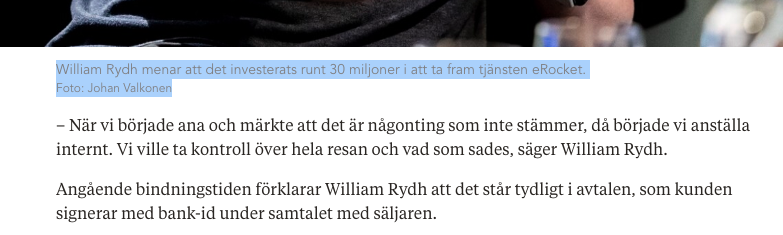
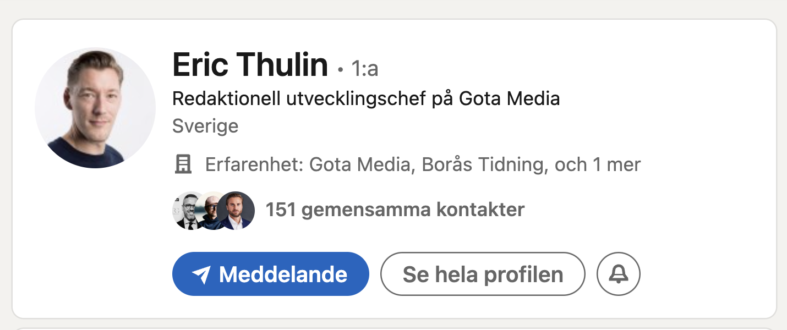

redovisade intäkter
0,99 mnkr beräknat resultat1,13 mnkr personalkostnader
Skada & värde
Den här sidan samlar skadebilden efter BT:s rapportering: eRockets förkonkursvärdering, Williams inkomstfall, konkurserna och hur BT:s egna artiklar enligt dokumentationen användes i ett Gota Media-kopplat angrepp på förtroendet.
Ekonomiskt sammanhang
Före BT:s rapportering fanns omsättning, personal, kundfordringar och en färdig produkt. Efter publiceringarna följde förlorat förtroende, inkomstfall och konkurser.
redovisade intäkter
angivet värdeintervall för eRocket

Fortsatt digital skada
När artiklarna låg online kunde de användas som auktoritet mot William, bolagen och förtroendet. Det mest anmärkningsvärda spåret är att Reco-angreppet inte framstår som en oberoende kundreaktion, utan som ett Gota Media/BT-kopplat återbruk av tidningens egna artiklar.


Yrkande
Värderingen placerar plattformen i intervallet 39,6-48,4 miljoner kronor.
Dokumentationen gör gällande att William inte längre kunde anlitas, anställas eller bära sitt namn i samma marknad.
Skadan upphör inte när publiceringen blir gammal, eftersom sökresultat och länkar fortsätter skapa bilden.